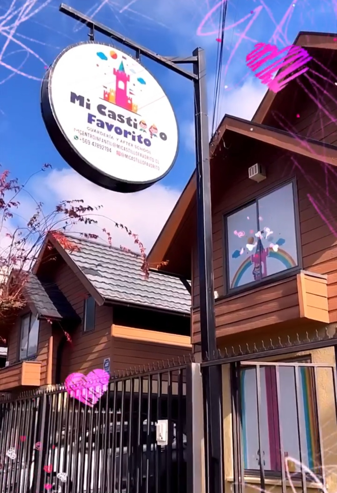
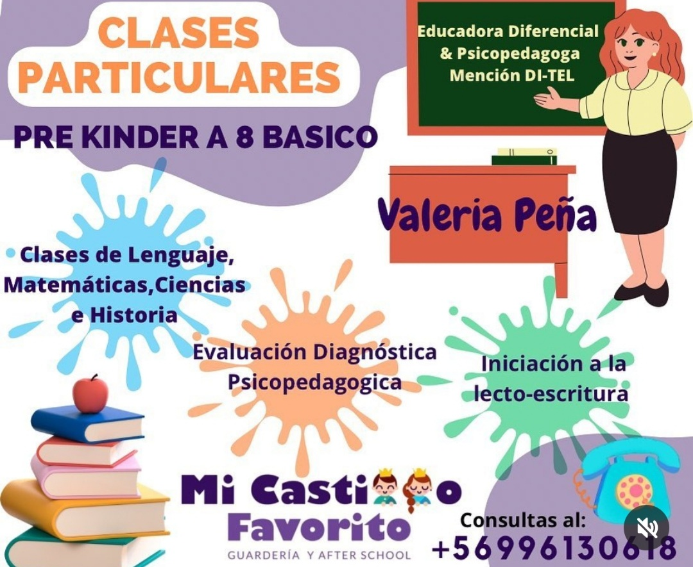
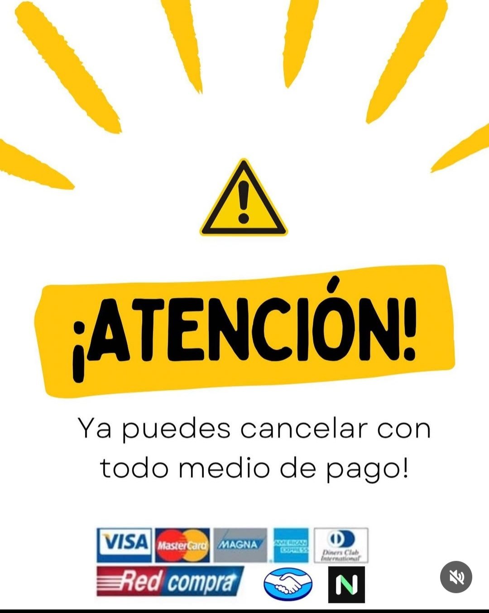

Mi Castillo Favorito
Contacto
Galería
Ubicación
Contáctanos
📱 WhatsApp:
+56 9 4789 2194
📧 Email:
centroinfantil@micastillofavorito.cl
📍 Dirección: Valle Nevado 838, Mirador de Los Andes
📸 Instagram:
@after.micastillofavorito
👍 Facebook:
@micastillofavorito
Galería



¿Dónde estamos?